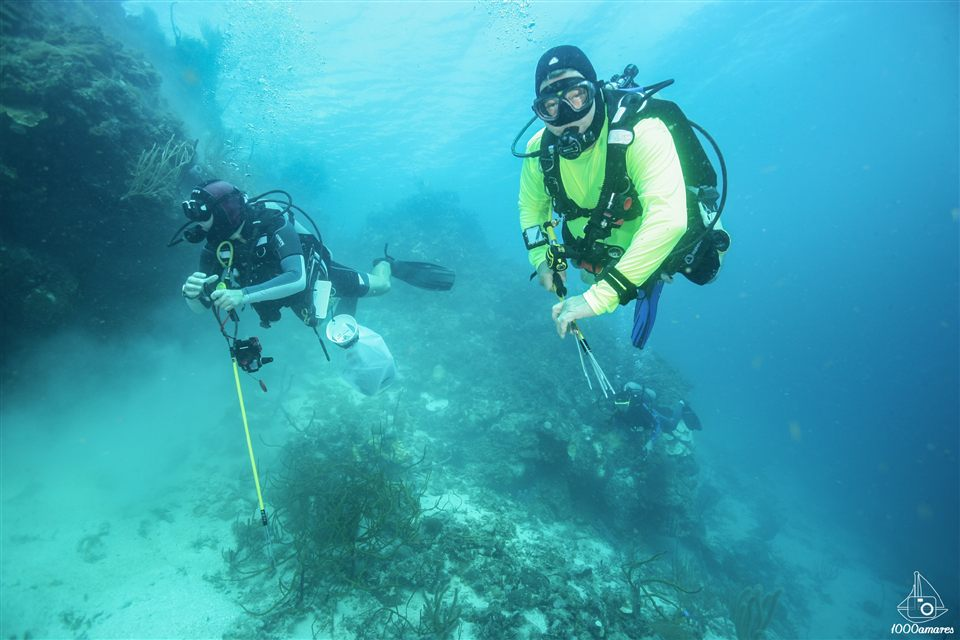

From the existing career archive
Teaching. Exploring.
Looking closer.
Christopher’s career page describes training and certifying more than 250 divers across multiple dive shops in Roatan, Honduras, discovering the “Island Fueler” shipwreck, and developing specialty education connected to lionfish and fish identification.
Read the career account, explore its credentials, or find the stories in the book.
Published features
From the media archive.
Articles linked from the existing WWMSID website.
Facebook Page
Follow WWMSID updates and related content.
DiveWire Lionfish
Article about lionfish hunter specialty training.
The Reminder
Feature on invasive species work and dive career.
Deeper Blue
Coverage of the lionfish hunter distinctive specialty.
DiveWire Fish ID
Article about advanced fish identification specialty training.
Paya Magazine
Lionfish article feature.
Keep exploring